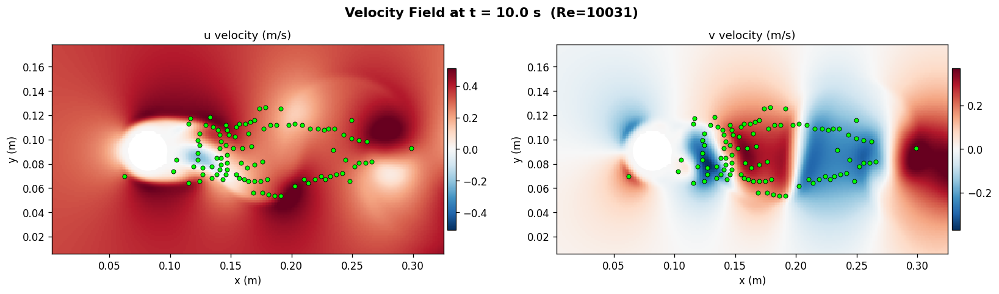
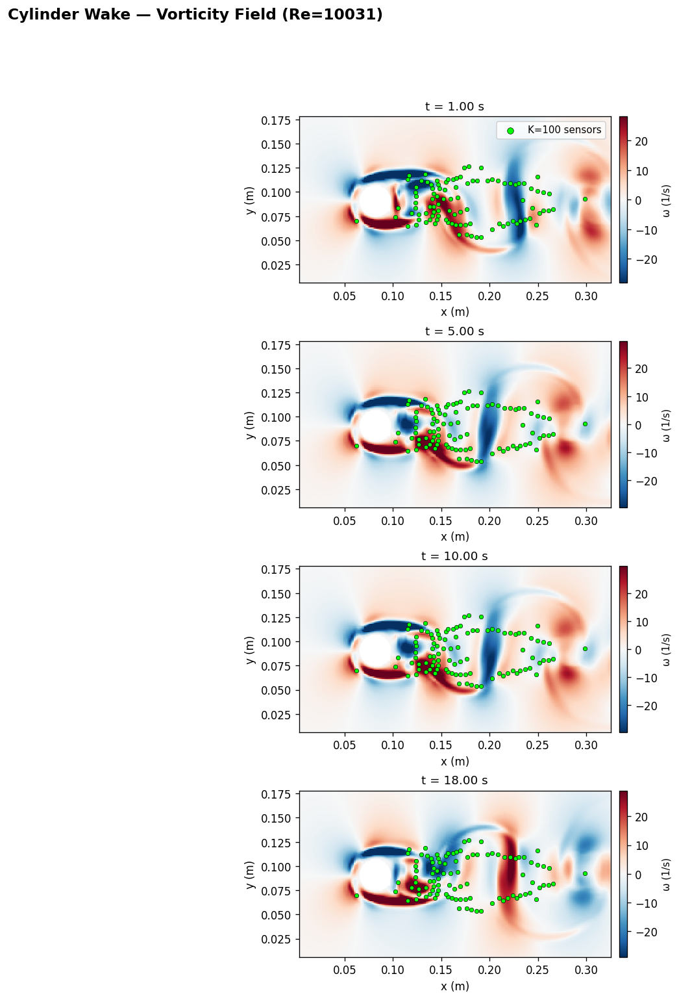
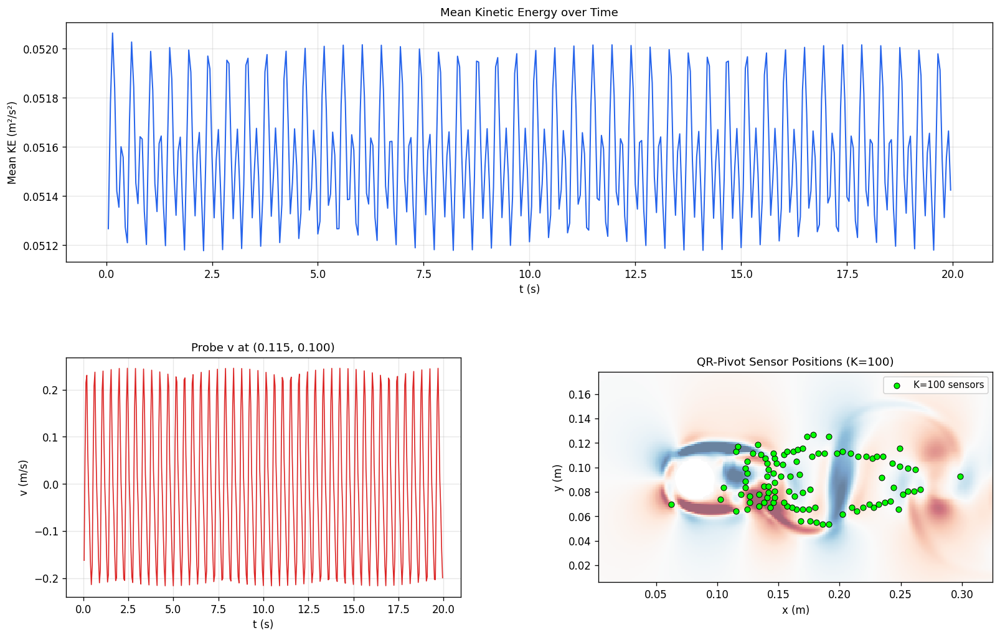

真實觀測只包含 u, v，並保留 sensor position 與 sensor time。
T=201
K=100
Re=10000
Pi-LNN 結合 DeepONet 的 operator learning 框架與 CfC（Closed-form Continuous-time）的因果時序記憶， 從 K=100 個稀疏速度感測器重建 Re=10000 二維 Kolmogorov 週期流場。 模型在訓練時只接觸感測器量測值與 NS 方程殘差，不依賴任何完整 DNS 場。
目標是在真實工程感測場景下重建流場：僅有 K 個點的速度量測值，加上已知的 NS 方程。 DNS 資料的合法用途限於從中提取 sensor values 作為訓練 supervision； 訓練時模型從未看到完整流場，所有重建能力來自 sensor MSE 與 physics residual 的組合。
Periodic box on [0,1]²，x / y 方向均為 strict periodic boundary。
Fourier 編碼與週期相對位置處理都建立在此假設上。
高 Reynolds number regime，慣性尺度跨越範圍大，小尺度渦旋豐富， 對稀疏 sensor 的空間覆蓋與模型表達力提出較高要求。
N = 256
T = 201 個時間點、dt = 0.025 的高解析度 DNS 序列，
僅用於離線 benchmark 與提取 sensor 觀測值。
f_x = 0.1 sin(4πy)
A = 0.1、k_f = 2、L = 1、f_y = 0。
單向正弦強迫在 y 方向注入能量，形成週期性大渦结構。
K = 100 sensors
QR-pivot 選取的 100 個空間位置，只觀測 u, v 兩個速度分量。
壓力 p 不作觀測，由模型作為內部 physics 場自由求解。
訓練 loss 只有兩項：sensor 位置的速度 MSE（資料一致性）與 NS momentum + continuity 殘差（物理一致性）。

DNS 渦度場作為離線 benchmark 參考。模型在訓練時從未接觸此完整場； 後續的 field、vorticity、spectrum 與 forcing-mode 圖展示的都是模型從稀疏感測器重建的結果， 與此圖的差距即為重建誤差的直觀呈現。
模型由兩條平行路徑組成：左側（Branch）沿時間序列建立 sensor memory，
右側（Trunk）為每個空間查詢點建立條件特徵；兩條路徑在 decoder 的 cross-attention 交會，
完成任意 (x, y, t) 的場值讀取。
真實觀測只包含 u, v，並保留 sensor position 與 sensor time。
LearnableFourierEmb(embed_dim=128) 加上 residual MLP，把每個 sensor 轉成 token。
token self-attention 後，以 CfC(dt) 沿時間推進 causal state。
保留所有可被 query 讀取的 branch states，decoder 只能讀到 causal 可用時間。
每個 query 指定位置、時間與要輸出的 component。
組合週期 Fourier、temporal anchor、dt_to_query 與 component embedding。
causal lookup 後做 cross-attention readout，再以 branch / trunk basis 融合輸出場值。
在任意 (x,y,t) 輸出 u, v, p。
t_{k+1} 不可被 query 讀取，避免偷看未來。
上方藍線負責把 sensor stream 轉成 branch memory；主線仍以 causal CfC 為主。
下方橘線負責把每個 (x,y,t,c) 轉成 trunk query。
綠線表示 memory 與 query 在 decoder 匯流，而不是單一路徑直通。
紅色虛線代表被封鎖的 future state，對應 searchsorted 的 causal lookup。
SpatialSetEncoder 將 K=100 個感測器轉成 token，
TemporalCfCEncoder 以連續時間 CfC 沿 sensor timeline 推進 causal state，
產生完整的 branch memory bank h_states [T, K, d]。
對每個查詢點，組合 LearnableFourierEmb 的週期空間特徵、
dt_to_query（查詢時刻與最近 memory 的時間差）與 temporal anchor，
建立 query-specific trunk feature。
trunk 對 branch tokens 做 cross-attention（帶等向距離 bias），
讀取 query-specific branch context，再以 branch/trunk basis 的 dot-product fusion
輸出 u, v, p。
這個模型有兩種和時間有關的處理：memory path 會沿著感測器時間序列遞推，
query path 則在任意查詢時刻 t_q 上建立讀取條件。兩者在 decoder 中透過
causal lookup 對齊。
branch memory 是以感測器取樣時間建立的，因此 query 並不是直接跨到任意未來狀態，
而是先找到當下可用的 memory，再補上 dt_to_query 做局部讀取。
TemporalCfCEncoder 只沿 sensor time 產生 h_k。
searchsorted 選到不晚於 t_q 的最新 memory。
t_{k+1} 尚不可讀，避免 query 偷看未來狀態。
TemporalCfCEncoder 依 sensor_time 的相鄰差值更新 token memory。
decoder 先用 searchsorted(sensor_time, t_q) 找到可用的 branch state index。
dt_to_query = t_q - sensor_time[idx] 進入 trunk，補充 query 與 memory 的時間差。
decoder 不是單一線性層，而是一個有明確步驟的 readout block。它先決定能讀哪個時間片，再決定該讀哪些 token， 最後才做 operator fusion 生成輸出。
以 searchsorted(sensor_time, t_q) 找到 query 當下對應的 branch memory，
先確定能讀哪一段時間。
用週期 Fourier、dt_to_query、temporal anchor 與 component embedding
組成 query feature。
trunk query 對 branch tokens 做 attention scoring，加上 isotropic relative bias， 取回 query-specific branch context。
branch basis 與 trunk basis 做 dot-product fusion，再依 component scale / bias
輸出最終 u, v, p。
LNN 的角色是提供連續時間記憶；DeepONet decoder 的角色是把這份記憶轉成任意查詢位置的場值。 這兩者在本模型中是分工合作，而不是彼此替代。
CfC 用可學習的時間尺度控制 gate，避免 LTC-style 數值 ODE solver 的額外 sub-stepping 成本。
sensor_time 不只是索引。CfC 直接使用相鄰時間差
dt = sensor_time[t] - sensor_time[t-1]，所以狀態轉移對時間尺度敏感，
可以明確表達 causal time evolution。
主線開啟 use_temporal_anchor=true，把
sin/cos(2π n t / T_total) 注入 trunk，目的不是硬塞 supervision，
而是降低 query time 相位辨識的模糊性。
decoder 的 attention bias 現在只用距離 |rel|，
不再用方向向量 (rel_x, rel_y)。這是因為 sensor x 分佈不均，
方向資訊會把感測器佈局偏差注入成 x-direction stripe artifact。
branch 保留成 token 序列，讓不同 query 能讀到不同的 sensor group 與時間片段， 更符合 sparse operator reconstruction 的需求。
每個 query 都會依自己的位置、時間與分量，對 branch tokens 做條件式 cross-attention， 所以讀出的上下文會隨查詢而變化。
decoder 最終輸出的是 u, v, p，並透過 momentum + continuity 殘差約束，
讓場重建不只貼近量測，也維持物理解釋性。
訓練設計的核心原則：loss 只使用在真實工程場景中可取得的訊號——sensor 量測值與已知 PDE。 不使用完整 DNS 場作為 supervision，以保證方法在無 DNS 的真實環境中也可複現。
u, v 做 MSE supervision。t_early_weight = 10（t ≤ 0.05）加強初始條件約束，改善 t=0 附近重建品質。p 無觀測 supervision，由 physics loss 間接約束。GradNorm（freq=1000, momentum=0.9）自動動態均衡 data / ns_u / ns_v / cont 四個 task 的梯度比例。SOAP + Schedule-Free：二階曲率估計搭配 Polyak 平均，在有限步數內獲得更穩定收斂。lr = 1e-3，betas=(0.9, 0.999)，warmup=2000，step decay。weight_decay = 0，precond_freq = 2。LearnableFourierEmb(embed_dim=128, σ=2.0)：可學習投影矩陣，讓模型自適應選取最有效的頻率方向。|rel|，避免感測器空間非均勻分佈引入方向性偽差。LearnableFourierEmb 輸出維度；σ=2.0 初始化。num_token_attention_layers = 2。lr_schedule = "soap"，warmup=2000，step_decay(2000, 0.9)。以下指標與圖像來自 Re=10000 模型在完整 T=[0, 5] 時段上的評估。 評估使用 DNS 場作為離線 benchmark，模型在訓練中從未接觸這些資料。
∇·u = 0 的全域殘差量級。先看空間結構是否成形，再看誤差是否集中在高梯度或渦旋邊界。


這組圖回答模型在整段時間上是否穩定，以及能量尺度有沒有逐步偏離。


最後看主模態與頻譜，確認全域結構沒有因局部誤差改善而失真。


0.962，代表主模態強度已相當接近 DNS。

-0.023 rad，
反映模型在長時間積分後仍能維持正確的主模態相位。
為驗證 K=100 上限是否仍有架構面的進步空間，於 2026-04-29 設計三項 turbulence-aware 提案：(#3) CfC log_tau 範圍對齊湍流多尺度、(#6) 頻率分層 LearnableFourierEmb、 (#5) PINN causal weighting (Wang 2022)。三項皆 hypothesis falsified， 進一步佐證 EXP-064 已達當前架構配置下的最優點。
| Experiment | Mechanism | KE Rel-Err | u Rel-L2 | div L2 | k_f Phase | Verdict |
|---|---|---|---|---|---|---|
| EXP-064 | Baseline (sensor physics + GradNorm) | 7.80% | 17.0% | 0.184 | −0.023 rad | ★ Active baseline |
| EXP-067 | #3 CfC τ ∈ (e⁻³, e¹) + #6 freq-stratified σ=(1,4,12) | 11.20% | 18.6% | 0.263 | −0.028 rad | +3.4 pp 退步 |
| EXP-068 | #5 PINN causal weighting (eps=1.0, 16 bins) | 9.73% | 21.2% | 0.680 | −0.057 rad | +1.9 pp / div ↑269% |
| EXP-069 | 三項組合（#3 + #6 + #5） | 20.13% | 29.2% | 1.404 | +0.112 rad | 負面交互（如預測） |
三項機制的負面交互模式各異：CfC fast channels (τ≈e⁻³≈0.05) 對 sensor dt=0.025 過敏感
引入高頻噪音；σ=12 高頻段微改善 band_mid 但 12.5% 通道分配犧牲低頻精度；causal
weighting 的 cumsum 由量級大的 momentum 主導，壓低 continuity 約束導致 div_l2 嚴重退步。
詳見 docs/experiment_log.md 第 39–41 條。
將同一 Pi-LNN 框架擴展到非週期域（cylinder wake）驗證泛化能力。 關鍵發現：感測器 100% 集中尾跡時，必須額外提供 inflow boundary condition loss 錨定來流速度，否則模型在 x≈0 區域系統性輸出 u≈0，造成 KE rel-err 51%。 加入 BC loss 後 KE 降至 3.5%（14.5× 改善），達到與 Kolmogorov baseline 相當的精度。
原始 baseline 配置直接套用至 cylinder 資料：K=100 感測器（QR-pivot 選自 RealPDEBench），
Re=10031，僅以 sensor MSE + NS residual 訓練。
根因：感測器布局 100% 落於尾跡（x > 0.10），來流區（x ≈ 0） 無觀測 supervision，physics residual 不足以鎖定來流速度方向，模型收斂至能量低估解。
在 x=0 邊界採樣 64 點，加入 BC loss 懲罰 (u − uinf)² + v²，
其中 uinf = 0.33 m/s（來自 DNS）。BC loss weight 0.1。
結論：所有非週期域問題必須在 config 中明確指定 inflow BC 參數
（bc_loss_weight、bc_inflow_u、bc_n_points），
Kolmogorov 週期域則不需要——這是 Pi-LNN 跨域應用的通用規則。



EXP-064（KE 7.80%）已達 K=100 sensor 配置的資訊論硬上限，稀疏重建主線正式結案。 低頻成分（k≤8，佔 94.4% 能量）已被可靠重建；中高頻的 ≈100% 誤差是 Compressed Sensing 理論的數學必然， 與優化器選擇、physics loss 設計、架構容量及感測器位置物理約束均無關。
| Frequency Band | Energy Share | Wavelet DOF Required | Feasible with K=100? | EXP-064 Band Error |
|---|---|---|---|---|
| Low (k ≤ 8) | 94.4% | ~196 | ✓ Underdetermined, feasible | 3.62% |
| Mid (k ~ 8..16) | 4.8% | ~588 | ✗ Exceeds K=100 capacity | ~100% |
| High (k ~ 16..32) | 0.8% | ~1452 | ✗ Far exceeds K=100 | ~100% |
低頻主能量帶（k≤8，94.4% 能量）已以 KE 7.80% 精度重建。 主強迫模態幅值比值 0.962、相位誤差 −0.023 rad，均接近 DNS。 整體動能尺度在全段 T=5 保持穩定，不可壓縮性殘差 div_l2 0.184。
中頻（k~8..16，4.8% 能量）需 ~588 個 wavelet 自由度，超出 K=100 容量。 已試驗的所有方向——SOAP optimizer、GradNorm、sensor continuity physics、trunk 加深、 CfC 多尺度 τ、頻率分層 Fourier、PINN causal weighting（EXP-067/068/069）—— 皆無法改變此硬上限。原因是 CS 約束，而非模型問題。
（1）K≥5000 感測器達到 CS 精確重建門檻； （2）K=200+ 加上更長訓練（EXP-066 初步突破 band_mid）； （3）4D-Var 時序同化利用物理模式耦合補足資訊； （4）DNS POD 基底作為高頻先驗（工程不可遷移，僅研究用）。
三項 turbulence-aware 嘗試（CfC 多尺度時間常數、頻率分層 Fourier、PINN causal weighting） 皆 hypothesis falsified——KE 退步 +1.9 ~ +12.3 pp，div_l2 最差 +663%， band_mid/high@t=5 仍 ≈100%。任何在 K=100 + 當前架構配置下的進一步「巧妙設計」都已撞牆。 這提供了 EXP-064 為 當前架構配置下的全域最優點 的強佐證； 進一步突破必須改變問題本身（增加 K 或引入物理先驗），而非優化器/loss/初始化的調整。
這兩段不是偽碼，而是對應目前工作樹中的核心邏輯：CfC 的 closed-form update，以及 最近加入的 optional bidirectional temporal scan。
xh = torch.cat([x, h], dim=-1)
f1 = torch.tanh(self.ff1(xh))
f2 = torch.tanh(self.ff2(xh))
tau_a = torch.exp(self.log_tau_a)
t_b = self.time_b(xh)
gate = torch.sigmoid(-tau_a * dt + t_b)
return gate * f1 + (1.0 - gate) * f2# re_bias 預先加進 seq，移除 _run_cfc_pass 內部 view call
attended_with_bias = attended + re_bias
fwd = self._run_cfc_pass(attended_with_bias, self.cells, dts, layer_idx, reverse=False)
if self.use_bidirectional:
bwd = self._run_cfc_pass(attended_with_bias, self.backward_cells, dts, layer_idx, reverse=True)
new_seq = fwd + bwd
else:
new_seq = fwd
seq = new_seq + seq if layer_idx > 0 else new_seq